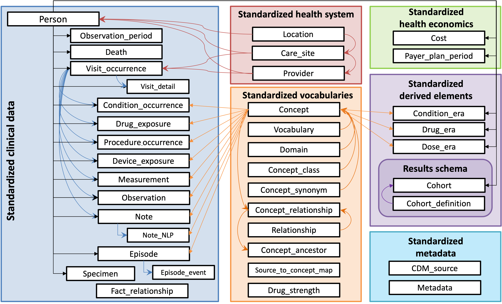
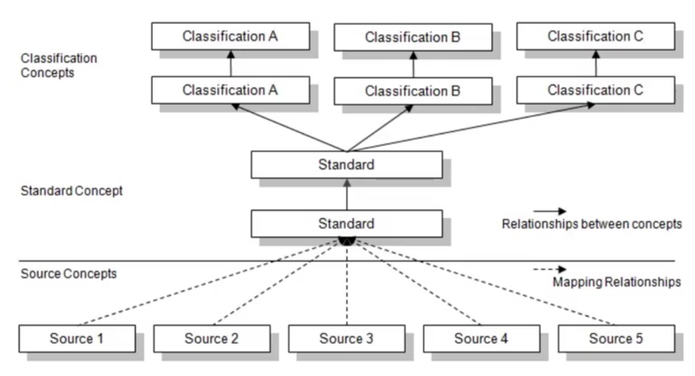

Médecine personnalisée
La médecine personnalisée segmente les patients en catégories de plus en plus fines — des phénotypes cliniques — pour adapter diagnostic et traitement.

Modèles de données communs (CDM)
Les CDM standardisent les données de santé pour que plusieurs institutions puissent les combiner et les analyser (maladies, traitements, résultats, etc.).

Les systèmes de santé stockent et nomment les données différemment. Un même concept peut avoir des noms variés au sein d’une organisation et, a fortiori, entre pays. Sans standardisation, les requêtes sont incohérentes et l’intégration difficile.

Les CDM définissent des structures et des champs communs pour que les mêmes données se trouvent au même endroit, quel que soit le système source.

CDM open‑source largement utilisés en recherche :
- i2b2 (Harvard University)
- OMOP (OHDSI Consortium)
- Sentinel (U.S. FDA)
- PCORnet (Patient-Centered Outcomes Research Institute)
Il n’existe pas de « meilleur » CDM unique : chacun a ses atouts et limites selon l’usage, la forme des données et les requêtes.
OMOP
OMOP est le CDM présenté ici car je l’utilise régulièrement. La communauté est active et la documentation solide.
OMOP = Observational Medical Outcomes Partnership.
Il est gouverné par la communauté OHDSI (Observational Health Data Sciences and Informatics) à l’université Columbia, New York.
Historique
- 2008 : initié par la FDA (États‑Unis) pour la pharmacovigilance et la détection d’événements indésirables.
- 2014 : transfert à OHDSI. Extension à la recherche clinique et à l’évidence en vie réelle.
Adoption
OMOP est largement adopté dans le monde ; on estime qu’environ 1,4 milliard d’individus ont des données mappées en OMOP.

Points clés
- Orientation internationale (multi‑pays, multi‑terminologies ; vocabulaires hiérarchiques)
- Communauté très active et écosystème riche d’outils analytiques
Modèle de données
Le CDM OMOP est principalement relationnel.
Les différences de terminologie entre langues et sources sont gérées via la standardisation. Par exemple, ICD‑10 (anglais) vs CIM‑10 (français) sont mappés vers un standard commun tel que SNOMED CT.

Liens utiles
- OHDSI home: https://www.ohdsi.org/
- OMOP CDM docs: https://ohdsi.github.io/CommonDataModel/
- ATLAS (analytics tool): http://www.ohdsi.org/web/atlas/
- OMOP Vocabulary v5.0 (GitHub): https://github.com/OHDSI/Vocabulary-v5.0 — vocabulary release artifacts and versioning (use Athena to search/download content).
Approfondissement : OMOP CDM
Les scripts DDL pour créer le modèle sont disponibles ici : OHDSI/CommonDataModel. Ces scripts SQL créent les tables standard du CDM OMOP.
Modèle OMOP et conventions
- Bleu : tables de données cliniques
- Vert : tables de classification/métadonnées
- Orange : vocabulaires/terminologies
Vue conceptuelle
OMOP distingue deux volets : source et standard.
Source
- Champs préfixés
source_(ex.source_value,source_concept_id) - Conservent les valeurs originales avant standardisation
- Utile pour des requêtes locales basées sur les termes locaux
Standard
- Champs référencés aux concepts OMOP (ex.
concept_id) - Utilisé par les outils OHDSI et pour des analyses standardisées multi‑sites
Cartographie
Tous les termes sources doivent être mappés aux concepts standards. Cela permet à plusieurs sources de converger vers un vocabulaire commun compris par la communauté.
Vous pouvez rechercher et télécharger les vocabulaires et mappings standardisés via Athena (portail officiel OHDSI) : https://athena.ohdsi.org/search-terms/start

Hiérarchies médicales
Les terminologies hiérarchiques permettent des agrégations et des explorations puissantes.

Exemples :
- Indication : regroupe les médicaments par pathologie traitée
- Classe thérapeutique : regroupe par mécanisme d’action
Terminologie des médicaments
Pour les médicaments, OMOP utilise RxNorm comme standard principal (National Library of Medicine, USA).

OMOP propose aussi d’autres hiérarchies, comme NDF‑RT (National Drug File – Reference Terminology), qui organise par maladies/indications.
Pourquoi standardiser avec OMOP ?
- Maintient les mappings des concepts non standards vers les standards (ex. ICD‑10‑CM → SNOMED CT)
- Les concepts de classification relient les concepts sous‑jacents ; les nouveaux concepts sont inclus automatiquement
- Plusieurs hiérarchies pour des analyses flexibles
Résumé
SOURCE_VALUE: valeurs originales non modifiées (utile pour le debug ; zéro perte)CONCEPT_ID: identifiants de concepts OMOP standardisés (harmonisation local ↔ réseau)- Hiérarchies : agrégations standardisées pour des requêtes cohérentes multi‑sites
Interroger OMOP
Concepts clés :
SOURCE_VALUE/SOURCE_CONCEPT_ID: valeurs sources originales (ex. MIMIC‑III), fidèles au système amont.CONCEPT_ID: identifiants de concepts OMOP standardisés, pour des requêtes multi‑sites.- Table
CONCEPT: dictionnaire des vocabulaires liantconcept_id↔ libellés et métadonnées.
- Table
CONCEPT_ANCESTOR: hiérarchies reliant un concept parent/ancêtre à tous ses descendants pour l’agrégation.
Exemple de hiérarchie :
OMOP utilise des noms de tables et de champs larges et standardisés afin de généraliser à de nombreux systèmes de santé. Exemples :
VISIT_OCCURRENCE= consultations/admissions/visites (spécification : CDM 5.4 VISIT_OCCURRENCE)CONDITION_OCCURRENCE= diagnostics/affections (spécification : CDM 5.4 CONDITION_OCCURRENCE)DRUG_EXPOSURE= prescription/délivrance/administration de médicaments (selon la source) (spécification : CDM 5.4 DRUG_EXPOSURE)
Ces noms « parapluie » couvrent volontairement des événements proches (ex. consultation externe, urgences, hospitalisation) sous une même notion de « visite ». Même logique pour les autres domaines.
L’usage des hiérarchies simplifie fortement les requêtes : au lieu d’énumérer des centaines de concepts, sélectionnez un concept_id ancêtre et incluez tous ses descendants via CONCEPT_ANCESTOR.